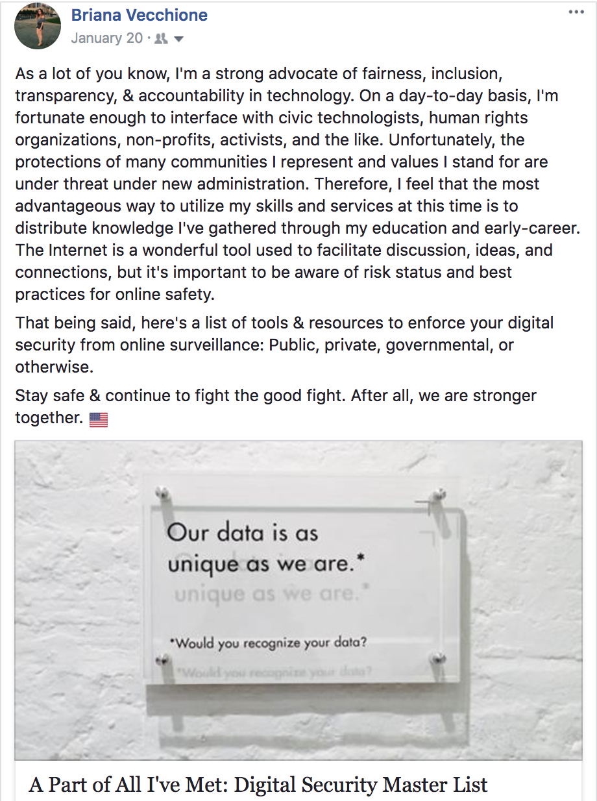
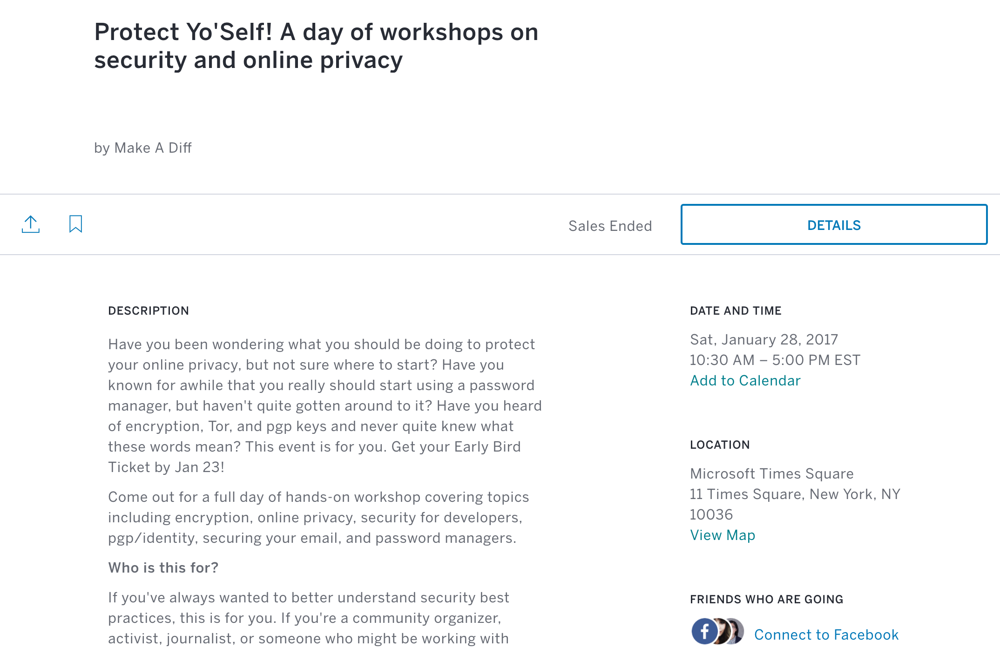
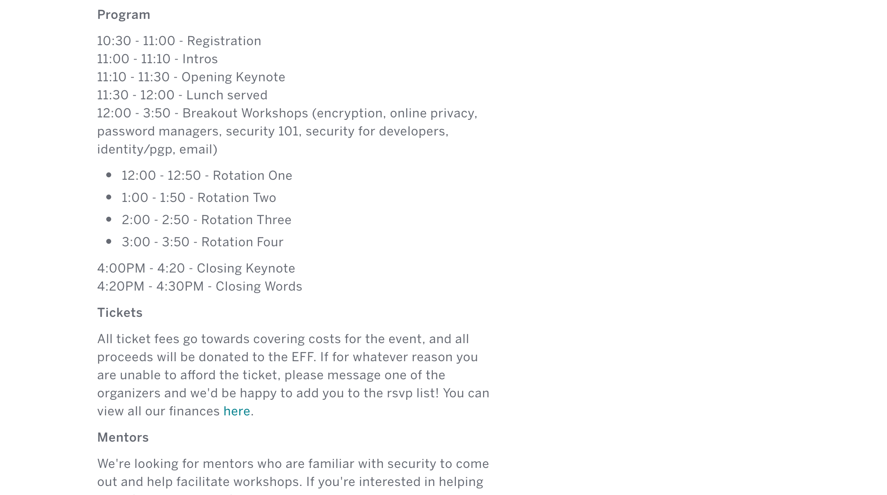

My involvement in cryptoparty workshops began as a reaction to the 2016 election. Concerned about the lack of civil protections under changing administration, I curated a list of tools & resources for enforcing an individual's digital security. I released it under my personal newsletter and named it the "Digital Security Master List" (read here).
I didn't feel that passively distributing tools was enough. After all, my personal reach was limited and I didn't expect my Master List to distriubute too widely. Around the same time, a friend of mine had been sharing similar concerns and decided to plan a cryptoparty with proceeds benefitting the Electronic Frontier Foundation. I immediately jumped aboard and began putting together a curriculum around privacy basics. My privacy team ended up teaching threat modeling, wireshark, and panopticlick. It was a success—the event had 7 unique workshops (Privacy, Encryption, Password Managers, Security, PGP, Email, and Security for Developers).
I decided I wanted to make security a priority in my work. I began organizing and volunteering at various workshops around the New York City area. I wanted to pay special attention to communities whose data had a higher threat model. Myself, along with an emerging group of volunteer hackers, began frequenting Arab American communities, journalists, and activists.
 My time commitments began to lengthen as demand for workshops increased. I found myself teaching cryptoparties anywhere from three to six hours long for interested parties. I organized an open-source repository from the resources volunteer hackers had compiled. It exists with the intent to introduce readers to common security terms, provide context for importance, teach best practices for digital security, and suggest digital tools for personal use. As of now, it houses five cheat sheets used for cryptoparties:
This process has been particularly meaningful for my personal growth and development of my professional interests. I plan to continue serving my local community by distributing knowledge to any and all interested. Many of the communities we interfaced with elected to remain anonymous, but some photos from consenting parties can be found below.